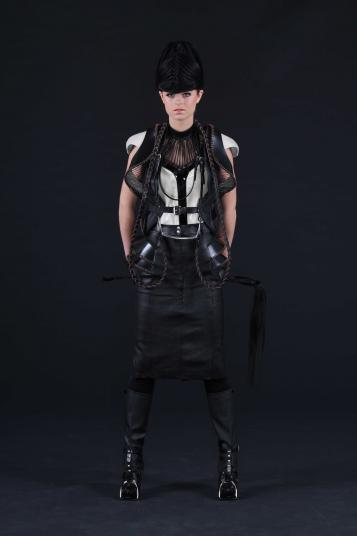
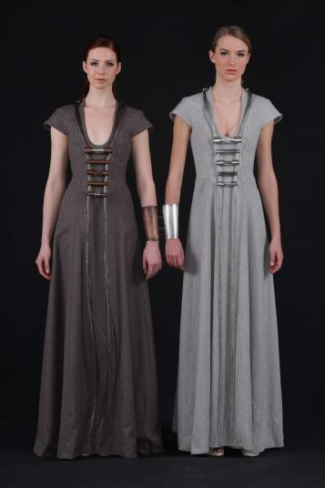
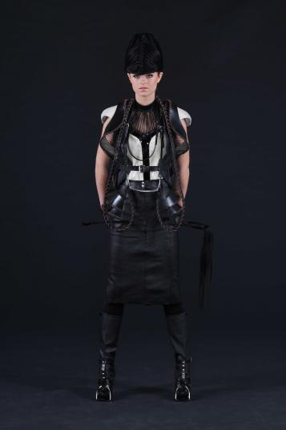
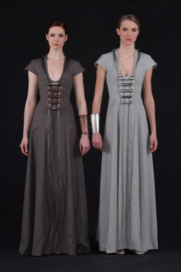
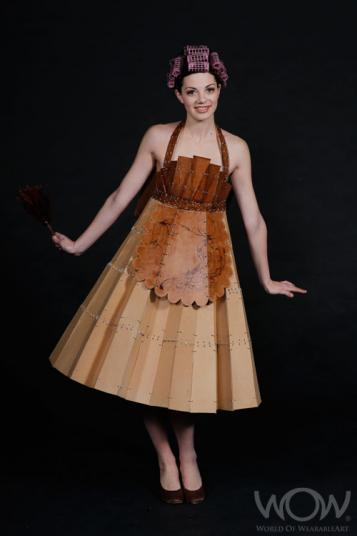
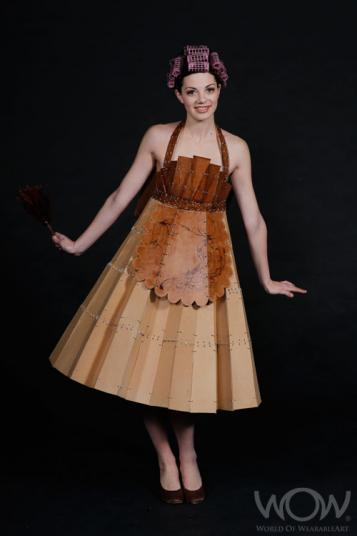

2008 Winner Montana Supreme WOW Award & Winner Air NZ Sth Pacific Section
Ornitho Maia, Nadine Jaggi, Wellington
2008 Wellington International Award
Suspension Dimension, Jonathan Wood, UK Winner Wellington International Award
2008 Booker Spalding First Time Entrant Award & Commended American Express Open Section & The Dominion Post Peoples Choice Award
Perfect Pins, Hannah Gibbs, Nelson
2008 Winner Shell Student Design Award & Runner Up CentrePort Inspired by Architecture Section
Wooden Dresses, Liina Gruener & Marjorie Cox, USA
2008 Runner Up Shell Student Design Award
Kanak,Tanya Marriott, Wellington
2008 HP Planet Award
A Song And Dance At Dinner Time! Norelle Kendrik, Nelson
2008 Runner Up HP Planet Award
Hei-Tiki The Director’s Cut, Sharon Flanagan, Wellington
2008 Winner Weta Award
A-Loco-Notion, Sarah Thomas, Timaru
2008 Runner Up Weta Award & WInner HP Children's Section
Fonteyn’s Folly, Wendy Burton & Patrick Duffy, Auckland
2008 Winner MainPower WOW Factor Award
Punk Bird Family, Sean Purucker, USA
2008 Commended HP Children's Section
Synchronised Silliness, Karen Gurney, Rangiora
2008 Runner Up HP Children's Section
Tu-Tu-Much, Ann Skelly, Wellington
2008 Winner AT & T Illumination Illusion Section
Me & My Shadow, Cassandra Bowe, Nelson
2008 Runner Up AT & T Illumination Illusion Section
Evolution Of The Rat Race, Kerry Lane, Christchurch
2008 Winner CentrePort Inspired By Architecture Section
Conversations With Guggenheim, Rodney Leong, Auckland Winner CentrePort Inspired By Architecture Section
2008 Commended AT & T Illumination Illusion Section
Pop, Passion and Politics, Janice Elliott, Christchurch
2008 Winner Shell Bizarre Bra Section
The Isobra, Janice Elliott, Christchurch
2008 Runner Up Shell Bizarre Bra Section
Busted, Rodney Thoburn, Taurnaga
2008 Commended Shell Bizarre Bra Section
Zimmer Bra, Maurice Bennett, Wellington
2008 Winner BioPaints Runner Up To The SUpreme WOW Award & Winner American Express Open Section
High Societies Visit Bill Hammonds Paradise, Margarete Palz, Germany
2008 Runner Up American Express Open Section
Loaded, Ursula Dixon & Paua Coulthard, Auckland
2008 Commended Air New Zealand South Pacific Section
The Birth of Velvet, Fifi Colston, Wellington
2008 Runner Up Air New Zealand South Pacific Section
5 Maarama Cresent, Andrea Clinton, Wellington
2008 Winner Tourism New Zealand Avant Garde Section
Hat Couture, Susan Holmes, Auckland
2008 Runner Up Tourism New Zealand Avant Garde Section
Embryo Of Cycle, Vivorn-Suebhame, Thailand
2008 Commended Tourism New Zealand Avant Garde Section
Illustre Shoe Machine, Maartje Dijkstra, Netherlands
2008 Commended CentrePort Inspired By Architecture Section
The Structure Of Beauty Aotearoa, Mitsuko Makino, Japan


2009 Winner Children's Section
The Dandelion Clock, Tracey Koole, Auckland
2009 Runner Up Children's Section
My Big Bloomer, Paula Rowan, Wellington
2009 Commended Children's Section
Miro, Miro, Quite Contrary, Norelle Kendrick, Nelson
2009 Winner Air New Zealand South Pacific Section
Rock On In The Shadowlands, Janet Bathgate, Nelson
2009 Runner Up Air New Zealand South Pacific Section
Tikini, Gillian Saunders, Nelson
2009 Commended Air New Zealand South Pacific Section
Tidal Traveller, Rita Schrieken, Paraparaumu
2009 Winner CentrePort Illumination Illusion Section
Into Thin Air, Marie Gant Roxburgh, Christchurch
2009 Commended CentrePort Illumination Illusion Section
Psychedelic Symphony, Janice Elliott, Christchurch
2009 Runner Up Supreme Montana WOW Award & Winner Gen - i Creative Excellence Section - Fold
Second Skin, Hayley May & Fiona Christie, Wellington
2009 Winner WOW & Classic Cars Museum Man Unleashed Section
Sir Lazyboy, Cassandra Bowe, Nelson
2009 Runner Up WOW & Classic Cars Museum Man Unleashed Section
Colour Blind, Dinah & Mark Walker, Auckland
2009 Commended American Express Open Section
DaVina, Frank Strunk III, United States
2009 Commended WOW & Classic Cars Museum Man Unleashed Section
Da Vinci's Dandies, Heather Wallace, Wellington
2009 Runner Up Gen - i Creative Excellence Section, Theme: Fold
Behind Closed Doors, Kathryn Preston & Angie Robinson, Christchurch
2009 Winner Supreme Montana WOW Award & Winner Tourism NZ Avant Garde Section
Lady Of The Wood, David Walker, Alaska, USA
2009 Runner Up Tourism New Zealand Avant Garde Section
AM I I AM, Rodney Leong, Auckland
2009 Winner Wellington International Award & Commended Tourism New Zealand Avant Garde Section
Saddle Up, Mary Wing To, United Kingdom
2009 Winner Booker Spalding First Time Entrant Award & Runner Up American Express Open Section
Lagarus Ovatus En Masse, Catherine Anderton, Wellington
2009 Runner Up Shell Student Design Award
Multi-Plug, Ragini Ahuja & Rishabh Rhode, India
2009 Winner Shell Student Design Award
Bound, Gina Digirolamo & Lindsey Eisentraut, United States
2009 Runner Up Wellington International Award & Commended Gen-i Creative Excellence Section, Theme: Fold
Screen Play, Amy Jean Boebel & Sue Hobby, United States
2009 Winner Weta Award & Winner American Express Open Section
American Dream, Sarah Thomas, Timaru
2009 Runner Up Weta Award & Runner Up Centreport Illumination Illusion Section
Wanderer, Sue Cederman, Motueka
2009 Winner Untouched World WOW Factor Award
Firebird, Susan Holmes, Auckland
2009 Winner Shell Sustainability Award
Queen Adelaide, Emma Whiteside, Wellington
 



Winner of the 2010 Montana Supreme World of WearableArt™ Award & Winner American Express Open Section
Loops, Yogesh Chaudhary & Manas Barve, India
2010 Runner Up to the Supreme WOW® Award & Runner Up American Express Open Section
Horridus, Lynn Christiansen, USA
2010 Winner Booker Spalding First Time Entrant Award
Something Wicked This Way Comes, Eve Gilliland, Otaki
2010 Runner Up Booker Spalding First Time Entrant Award & Runner Up Shell Sustainability Award
Packed, Elizabeth Geenty, Wellington
2010 Winner Shell Student Design Award
Shadowlands, Luka Mues, Wellington
2010 Runner Up Shell Student Design Award
Smouldering Energy, Loren Shields, Wellington
2010 Winner Shell Sustainability Award
Just Hare-Say, Keryn Whitney, Hastings
2010 Winner Wellington International Award
Ecdysis, Bonnie Begg & Christine White, Australia
2010 Runner Up Wellington International Award
BioLumina, Svenja, Australia
2010 Winner WETA Award
Put A Cork In It, Sean Purucker, USA
2010 Runner Up WETA Award
Promiscua Le Plus Grande, Mike Ward, Nelson
2010 Winner Untouched World WOW® Factor Award
Reflection On Time, Julie Brawley, Ashburton
2010 Runner Up Untouched World WOW® Factor Award
Untitled, Alexandra Maignan, Netherlands
2010 Winner Mainfreight Duffy Books In Homes Children’s Section
Victus Libri (Who Needs Computer Games?), Jane Ewers, Nelson
2010 Runner Up Mainfreight Duffy Books In Homes Children’s Section
Toys Are Us! Norelle Kendrick, Nelson
2010 Commended Mainfreight Duffy Books In Homes Children’s Section
A Bid for Freedom, Kate Hellyar, Leeston
2010 Commended World of WearableArt™ & Classic Cars Museum Bizarre Bra® Section
Prickly Heat, Wendy Moyer, Mexico
2010 Winner CentrePort Illumination Illusion® Section Theme: Float, Fly, Flow
The Cycle Of A Fungus, Dimitri Jagtenberg, Netherlands
2010 Runner Up CentrePort Illumination Illusion® Section Theme: Float, Fly, Flow
Unity, Erna & Karl Van Der Wat, Auckland
2010 Commended CentrePort Illumination Illusion® Section Theme: Float, Fly, Flow
Caught In The Maelstrom, Marie Gant Roxburgh, Christchurch
2010 Winner World of WearableArt™ & Classic Cars Museum Bizarre Bra® Section
Every Rose Has Its Thorns, Violet Oliver, Auckland
2010 Runner Up World of WearableArt™ & Classic Cars Museum Bizarre Bra® Section
Take Off!, Jenny Judge, Waitakere
2010 Commended American Express Open Section
Breathing, Ru Xiang & Tang Wenjie, China
2010 Honorable Mention American Express Open Section
You Don’t Bring Me Flowers, Catherine Anderton, Wellington
2010 Winner Air New Zealand South Pacific Section
2010 Runner Up Air New Zealand South Pacific Section
Who’s The Pest…….I Am The Pest!!!, Beatrice Carlson, Auckland
2010 Commended Air New Zealand South Pacific Section
Gondwana, Susan Holmes, Auckland
2010 Winner Tourism New Zealand Avant Garde Section: Theme: Inspired by the Circus
The Ring Mistress, Richelle Dynae Rudeen, UK
2010 Runner Up Tourism New Zealand Avant Garde Section: Theme: Inspired by the Circus
Rosa (Le Freak, C’est Chic), Gillian Saunders, Nelson
2010 Commended Tourism New Zealand Avant Garde Section: Theme: Inspired by the Circus
Lady Curiosity, Fifi Colston, Wellington
2010 Honorable Mention Tourism New Zealand Avant Garde Section: Theme: Inspired by the Circus
Trichromatic Hula Sistars Revue, Tarja Pabbruwe & Petro van Zijl, Auckland
2010 Honorable Mention Tourism New Zealand Avant Garde Section: Theme: Inspired by the Circus
Epona, Rachael Galuszewski, Rotorua
2010 Winner Gen - i Creative Excellence Section: Theme 'Art of Light'
Lady La La, Dinah & Mark Walker, Auckland
2010 Runner Up Gen - i Creative Excellence Section: Theme 'Art of Light'
Lumiere Australis, Janet Bathgate & Pete Mundy, Nelson
2010 Commended Gen - i Creative Excellence Section: Theme 'Art of Light'
Wood, Wire and Fire, David Walker, USA


Hylonome, Mary Wing To, United Kingdom
2011 Supreme Brancott Estate WOW Award Winner and 2011 Winner Tourism New Zealand Avant Garde
Hide In My Bone Shadow, Marjolein van der Wal, Netherlands
2011 Runner Up to the Supreme Brancott Estate WOW Award and 2011 Gen-I Creative Excellence Section - Winner
Feminine Mettle, Frank Strunk III, United States
2011 WOW Factor Award Runner Up
Reflection, Erna & Karl Van Der Wat, Auckland
2011 WOW Factor Award - Winner
Hermecea, Jan Kerr, Paraparaumu
2011 Weta Award Winner and 2011 American Express Open Section - Winner
Hijinx In The Hierarchy, Karen Gurney, Rangiora
2011 Weta Award Runner Up and 2011 Children's Section Runner Up
Itchy-Stitch, Christopher Davis, Auckland
2011 Winner Shell Sustainability Award
Modern Warfare, David Hebert, United States
2011 Wellington International Award Runner Up
Girl In Red Shoes, Sarah Hopkins, United Kingdom
Winner Wellington International Award
Chrysolophus Pictus, Nicole Pitchers, United Kingdom
Shell Student Innovation Award - Runner Up
The Greatest Show, Sophie Littin, Wellington
Winner Shell Student Innovation Award
Skin, Marjolein Dallinga, Canada
2011 Booker Spalding First Time Entrant Award Runner Up and 2011 Gen-i Creative Excellence Section - Commended
Indigo Warriors, Yuki Tanaka, Hamilton
Winner 2011 Booker Spalding First Time Entrant Award
Storyboards, Ali Middleton, Wellington
Winner 2011 Mainfreight Packing Award & Honorable Mention Air New Zealand Kiwi icons Section
Pretzella, Sean Purucker, United States
Winner 2011 Children's Section
All Sorted, Loretta Johnson, Canterbury
Commended 2011 Children's Section
Exquisite Corpse, Katie Collier, Wellington
2011 Centreport Illumination Illusion Section Runner Up
I Ris(e), Sue Cederman, Motueka
2011 Centreport Illumination Illusion Section Winner
My Garden City, Judith Clemett, Christchurch
2011 Centreport Illumination Illusion Section Commended
A Nightmare Near By, Siu Ping Wan, United Kingdom
2011 Gen-I Creative Excellence Section - Runner Up
Lady Bacilli Cocci, Ann Skelly, Wellington
2011 Gen-I Creative Excellence Section - Honorable Mention
Vena Immaculata, Fifi Colston, Wellington
2011 Gen-I Creative Excellence Section - Honorable Mention
Lucid Epiphany, Sean Purucker, United States
2011 American Express Open Section - Runner Up
Proud To Wear The Pinny, Nicole Linnell, Wellington
2011 American Express Open Section - Commended
Sir Lace Alot, Julie Brawley, Nelson
2011 World of WearableArt and Classic Car Museum Man Unleashed Section - Winner
Preened To Perfection, Katherine Easton, Dannevirke
2011 World of WearableArt and Classic Car Museum Man Unleashed Section - Runner Up
Amour Amour by Ruth Carlile (Nelson)
2011 World of WearableArt and Classic Car Museum Man Unleashed Section - Commended
Everyday Eros, Sue Prescott, Wellington
2011 World of WearableArt and Classic Car Museum Man Unleashed Section - Honorable Mention
Yes Dear... A Pas De Deux by Mike Ward, Nelson
2011 World of WearableArt and Classic Car Museum Man Unleashed Section - Honorable Mention
When Brunel Met Chanel, Steve Brown, Tauranga
2011 Tourism New Zealand Avant Garde Section - Commended
Iron Maiden, Sally Davies & Chris Nutter, Invercargill
2011 Tourism NZ Avant Garde Section - Honorable Mention
Isabelle, Lorene Ireland, USA
2011 Air New Zealand Kiwi Icons Section - Winner
I Wool Survive, Anne Aitchison, New Plymouth
2011 Air New Zealand Kiwi Icons Section - Runner Up
Road Trip To..., Mercia Paaymans, Hastings
2011 Air New Zealand Kiwi Icons Section - Commended
Pohutukawa Princess, Andi Regan, Wanaka
2010 Air New Zealand Kiwi Icons Section - Honorable Mention

 

Delight Of Light, Yuru Ma & Mengyue Wu, China
2012 Brancott Estate Supreme WOW Award - 'Winner' & American Express Open Section 'Winner'
Revive, Mengyue Wu & Yuru Ma, China
'Runner Up' to the Supreme WOW Award & Tourism New Zealand Avant Garde Section - 'Winner'
Velociraptor!, Milada Adams, Australia
WETA Award 'Winner'
aBRAcalypse Now, Wendy Moyer, Mexico
Weta Award - 'Runner Up'
Noor Reverie, Rebecca Maxwell, Wellington
WOW Factor Award - 'Winner'
The Glamour Card, Jaswant Daranga & Nilmani Kumar, India
WOW Factor Award - 'Runner Up'
City Lolita, Deborah Shepherd, Paeroa
Shell Sustainability Award - 'Winner'
VCR, Christopher Davis, Auckland
Shell Sustainability Award - 'Runner Up'
Beast In The Beauty, David Walker, USA
Wellington International Award - 'Winner'
Legend Of Darkness, Ying Zhang & Tao Wang, China
Wellington International Award - 'Runner Up'
Rise From the Ruins, Nicole Linnell, Wellington
Shell Student Innovation Award - 'Winner'
My Maria, Caitlin Brogan, Auckland
Shell Student Innovation Award - 'Runner Up'
Epicentre Divas, Claire Third, Christchurch
WOW & Classic Car Museum Bizarre Bra Section - 'Winner'
La Danse Macabre, Mercy Brewer, Auckland
Booker Spalding First Time Entrant Award - 'Winner'
Lunar Duo, Denise Laurie, Invercargill
Booker Spalding First Time Entrant Award - 'Runner Up'
Two Barb Bra, With Love, Sue Newby & Bruce Haliday, Auckland
WOW & Classic Cars Museum Bizarre Bra Section - 'Runner Up'
Party Line, Angela Leong, Wellington
WOW & Classic Cars Museum Bizarre Bra Section - 'Commended'
Typecast, Donna Allfrey, Christchurch
WOW & Classic Cars Museum Bizarre Bra Section - 'Honourable Mention'
Jantar Mantar, Khadimul Islam, India
WOW & Classic Cars Museum Bizarre Bra Section - 'Honourable Mention'
In The Op, Ling Lai Kit Ling, Hong Kong
Tourism New Zealand Avant Garde Section - 'Runner Up'
Retro Futuristic, Raymond Lau, Hong Kong
Tourism New Zealand Avant Garde Section - 'Commended'